The invention of the transistor by William B. Shockley, Walter H. Brattain and John Bardeen of Bell Telephone Laboratories drastically changed the electronics industry and paved the way for the development of the Integrated Circuit (IC) technology. The first IC was designed by Jack Kilby at Texas Instruments at the beginning of 1960 and since that time there have already been four generations of ICs .Viz SSI (small scale integration), MSI (medium scale integration), LSI (large scale integration), and VLSI (very large scale integration). Now we are ready to see the emergence of the fifth generation, ULSI (ultra large scale integration) which is characterized by complexities in excess of 3 million devices on a single IC chip. Further miniaturization is still to come and more revolutionary advances in the application of this technology must inevitably occur.
Over the past several years, Silicon CMOS technology has become the dominant fabrication process for relatively high performance and cost effective VLSI circuits. The revolutionary nature of this development is understood by the rapid growth in which the number of transistors integrated in circuits on a single chip.
The graph shows a significant decrease in the size of the chip in recent years which implicitly indicates the advancements in the VLSI technology.
The MOS Transistor means, Metal-Oxide-Semiconductor Field Effect Transistor which is the most basic element in the design of a large scale integrated circuits(IC).
These transistors are formed as a ``sandwich'' consisting of a semiconductor layer, usually a slice, or wafer, from a single crystal of silicon; a layer of silicon dioxide (the oxide) and a layer of metal. These layers are patterned in a manner which permits transistors to be formed in the semiconductor material (the ``substrate''); a diagram showing a MOSFET is shown below in Figure
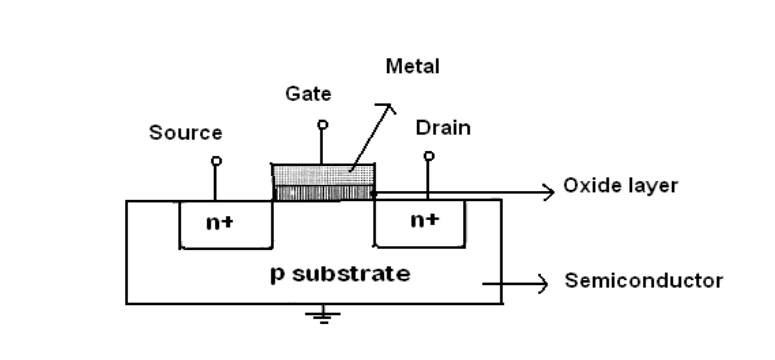
Silicon dioxide is a very good insulator, so a very thin layer, typically only a few hundred molecules thick, is used. In fact , the transistors which are used do not use metal for their gate regions, but instead use polycrystalline silicon (poly). Polysilicon gate FET's have replaced virtually all of the older devices using metal gates in large scale integrated circuits. (Both metal and polysilicon FET's are sometimes referred to as IGFET's (insulated gate field effect transistors), since the silicon dioxide under the gate is an insulator.
MOS Transistors are classified as n-MOS, p-MOS and c-MOS Transistors based on the fabrication .
In an enhancement mode device a polysilicon gate is deposited on a layer of insulation over the region between source and drain. In the diagram below channel is not established and the device is in a non-conducting condition, i.e \( V_D = V_S = V_{gs} = 0 \). If this gate is connected to a suitable positive voltage with respect to the source, then the electric field established between the gate and the substrate gives rise to a charge inversion region in the substrate under the gate insulation and a conducting path or channel is formed between source and drain.
To understand the enhancement mechanism, let us consider the enhancement mode device. In order to establish the channel, a minimum voltage level called threshold voltage \( (V_t) \) must be established between gate and source. Fig. (a) Shows the existing situation where a channel is established but no current flowing between source and drain \( (V_{ds} = 0) \).
Let us now consider the conditions when current flows in the channel by applying a voltage \( V_{ds} \) between drain and source. The \( \text{IR drop} = V_{ds} \) along the channel. This develops a voltage between gate and channel varying with distance along the channel with the voltage being a maximum of \( V_{gs} \) at the source end. Since the effective gate voltage is \( V_g = V_{gs} - V_t \), (no current flows when \( V_{gs} < V_t \)) there will be voltage available to invert the channel at the drain end so long as \( V_{gs} - V_t \sim V_{ds} \). The limiting condition comes when \( V_{ds} = V_{gs} - V_t \). For all voltages \( V_{ds} < V_{gs} - V_t \), the device is in the non-saturated region of operation which is the condition shown in Fig. (b) below.
Let us now consider the situation when \( V_{ds} \) is increased to a level greater than \( V_{gs} - V_t \). In this case, an IR drop equal to \( V_{gs} - V_t \) occurs over less than the whole length of the channel such that, near the drain, there is insufficient electric field available to give rise to an inversion layer to create the channel. The .channel is, therefore, 'pinched off as shown in Fig. (c). Diffusion current completes the path from source to drain in this case, causing the channel to exhibit a high resistance and behave as a constant current source. This region, known as saturation, is .characterized by almost constant current for increase of \( V_{ds} \) above \( V_{ds} = V_{gs} - V_t \). In all cases, the channel will cease to exist and no current will flow when \( V_{gs} < V_t \). Typically, for enhancement mode devices, \( V_t = 1 \text{ volt} \) for \( V_{DD} = 5 \text{ V} \) or, in general terms, \( V_t = 0.2 V_{DD} \).
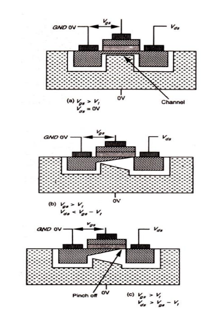
N-MOS Depletion mode mosfets are built with P-type silicon substrates, and P-channel versions are built on N-type substrates. In both cases they include a thin gate oxide formed between the source and drain regions. A conductive channel is deliberately formed below the gate oxide layer and between the source and drain by using ion-implantation. By implanting the correct ion polarity in the channel region during fabrication determines the polarity of the threshold voltage (i.e. \( -V_t \) for an N channel transistor, or \( +V_t \) for an P-channel transistor). The actual concentration of ions in the substrate-to-channel region is used to adjust the threshold voltage \( (V_t) \) to the desired value.
\( V_{td} \) is typically \( < - 0.8 V_{DD} \), depending on the implant and substrate bias, but, threshold voltage differences apart, the action is similar to that of the enhancement mode transistor.
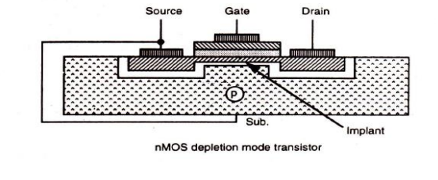
| Feature | Enhancement Mode | Depletion Mode |
|---|---|---|
| Channel Status at \( V_{gs} = 0 \) | Not established (Non-conducting) | Deliberately formed (Conducting) |
| Fabrication Complexity | Simpler (No ion implant needed) | Harder (Requires precise ion implantation) |
| Threshold Voltage (\( V_t \)) | Positive (e.g., \( V_t = 0.2 V_{DD} \)) | Negative (e.g., \( V_{td} < -0.8 V_{DD} \)) |
| Action to Turn OFF | Remove gate voltage (\( V_{gs} < V_t \)) | Apply negative gate voltage (\( V_{td} \)) |
Think of a MOS Transistor as a garden hose carrying water (current) from the faucet (Source) to the sprinkler (Drain), with your hand acting as the Gate.
This section breaks down how chip fabrication engineers “set” the threshold voltage \(V_T\) of a MOSFET by controlling the dopant ions near the channel. Let’s build it from zero.
For a MOSFET, the channel is the conducting path that forms between Source and Drain when the Gate voltage is sufficient.
So the channel's carrier type determines whether the transistor is N-channel or P-channel.
During fabrication, engineers physically put dopant atoms into the silicon. This is called ion implantation. Think of silicon as a huge grid of silicon atoms. Engineers shoot selected impurity ions into a very specific region.
| Dopant | Creates | Effect |
|---|---|---|
| Boron | P-type | Adds holes |
| Phosphorus/Arsenic | N-type | Adds electrons |
\(V_T\) = Threshold Voltage. It's approximately the minimum Gate-to-Source voltage needed to create a strong conducting channel.
For example, suppose an NMOS has \( V_T = 0.7V \):
Start with a P-type substrate. So near the surface we already have lots of holes (+). Now apply a positive gate voltage. The positive gate repels holes and attracts electrons toward the surface. Eventually, enough electrons gather there to create an inversion layer:
That electron layer is the N-channel.
Suppose engineers increase the P-type doping concentration underneath the gate. That means there are more acceptor ions/holes that must be overcome. The positive gate now has a harder job. It needs a higher voltage to attract enough electrons to create the inversion channel.
Conversely:
That's the basic reason doping is used to tune threshold voltage.
The sentence you're studying says: "Implanting the correct ion polarity in the channel region determines the polarity of the threshold voltage."
Be careful here. It doesn't simply mean: "Put positive ions → positive \(V_T\)". It's more subtle. The device structure and body/channel doping determine whether you're making NMOS or PMOS, and the implanted dopants modify the electrostatics and therefore the magnitude and sometimes effective polarity/sign of \(V_T\).
For normal enhancement-mode MOSFETs:
So the dose/concentration of implanted dopants is one of the fabrication knobs used to obtain the desired threshold voltage.
Imagine the Gate is trying to open a door. The channel is the door. The substrate doping determines how strongly the door is being held shut.
For an NMOS, threshold voltage can be represented approximately as:
Don't panic about the equation. 😄 The important part is \( N_A \), which represents the acceptor concentration in the P-type body. As \(N_A\) changes, the threshold voltage changes. So fabrication engineers can control \(N_A\) through ion implantation.
There are also other parameters affecting \(V_T\), such as Gate work function, Oxide thickness, Fixed oxide/interface charge, Body doping, Temperature, and Short-channel effects. So channel doping is important, but it isn't the only \(V_T\) control mechanism.
In normal human language: During MOSFET manufacturing, engineers deliberately add specific dopant atoms near the channel. The type of dopant establishes the required transistor behavior, while the amount of dopant changes how difficult it is for the gate to form the channel. Therefore, by controlling the dopant type and concentration, engineers can manufacture a MOSFET with the desired threshold voltage.
One-line exam version:
And the mental picture to remember is: Doping → changes charge in channel/body region → changes gate voltage required for inversion → changes \(V_T\).
An enhancement MOSFET starts with NO conducting channel between Source and Drain.
At \( V_{GS}=0 \), there is no N-channel, so \( I_D \approx 0 \). That's why it's called enhancement mode. The gate voltage has to create/enhance the channel.
For NMOS, apply a positive voltage to the gate. The positive gate attracts electrons toward the silicon surface underneath the oxide. As \(V_{GS}\) increases, more electrons gather near the surface. Eventually there are enough electrons to form an inversion layer.
The voltage at which this channel becomes sufficiently formed is called \( \boxed{V_T=\text{threshold voltage}} \).
If \( V_{GS} < V_T \), no proper channel. \( \boxed{I_D \approx 0} \)
If \( V_{GS} > V_T \), a channel exists. \( \boxed{I_D \text{ can flow}} \)
The amount of gate voltage above threshold is often called the effective or overdrive voltage: \( \boxed{V_{OV} = V_{GS} - V_T} \)
So far, we've created a channel, but suppose \( V_{DS}=0 \). There is no voltage pushing electrons from Source to Drain. Therefore \( \boxed{I_D=0} \) even though the channel exists. Think: Gate creates the road. \(V_{DS}\) provides the push along the road.
Now apply \( V_{DS} \). Current starts flowing from Drain to Source through the channel. But something interesting happens. The channel does not experience the same gate-to-channel voltage everywhere.
At the source end, the channel is approximately at \( V_S=0 \). If the gate is at \( V_G=3V \), then \( V_G - V_{channel} = 3V \). So the channel is strongly formed.
But as we move toward the drain, the channel voltage rises. Because the channel has resistance, whenever current flows through resistance, voltage drops (\(V=IR\)). The voltage gradually drops along the channel.
Therefore the gate-to-channel voltage gets smaller as you approach the drain.
The channel disappears at the drain when \( V_{GD} = V_T \). Since \( V_{GD} = V_{GS} - V_{DS} \), we get \( V_{GS} - V_{DS} = V_T \). Rearrange:
This is the boundary between the linear/non-saturated region and saturation.
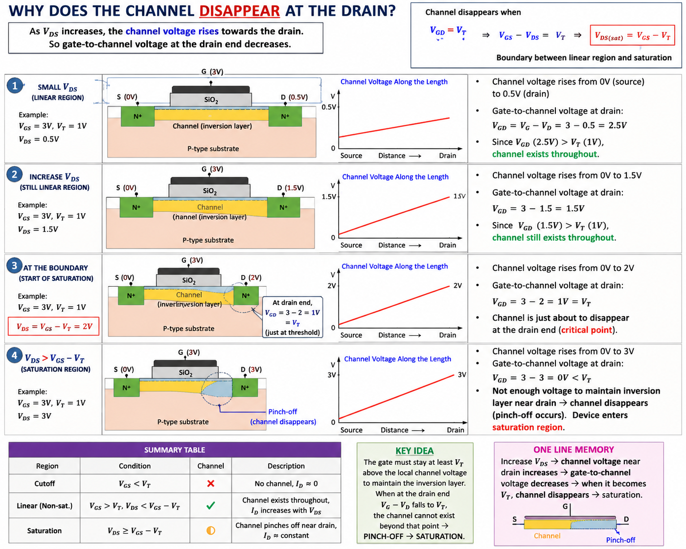
Electrons travel through the channel and are swept across the pinch-off/depletion region by the strong electric field toward the drain. So current continues.
Once \( V_{DS} \ge V_{GS} - V_T \), increasing \( V_{DS} \) further mostly increases the voltage across the pinch-off region rather than substantially increasing the channel charge. Therefore the drain current becomes approximately constant (\( I_D \approx \text{constant} \)).
| Condition | Channel | Region |
|---|---|---|
| \(V_{GS} < V_T\) | ❌ No channel | Cutoff |
| \(V_{GS} > V_T,\ V_{DS} < V_{GS}-V_T\) | ✅ Full channel | Linear / non-saturated |
| \(V_{GS} > V_T,\ V_{DS} \ge V_{GS}-V_T\) | ⚠️ Pinched near drain | Saturation |
The channel is deliberately created during fabrication using ion implantation. Therefore even when \( V_{GS}=0 \), the channel exists (\( I_D \neq 0 \)). To turn it OFF, for an NMOS, you apply a negative gate voltage to repel electrons from the channel. Therefore \( \boxed{V_T < 0} \) for an N-channel depletion MOSFET.
| Feature | Enhancement NMOS | Depletion NMOS |
|---|---|---|
| Channel at \(V_{GS}=0\)? | ❌ No | ✅ Yes |
| Normally | OFF | ON |
| Channel created by | Gate voltage | Fabrication/implantation |
| \(V_T\) | Positive | Negative |
| To turn ON | \(+V_{GS}\) | Already ON at 0 V |
| To turn OFF | Remove gate voltage | Apply sufficiently negative \(V_{GS}\) |
The sentence "Diffusion current completes the path from source to drain in this case..." is an older/less clear description of saturation. For the usual long-channel MOSFET explanation, the important picture is: The inversion channel pinches off near the drain, and carriers are swept through the high-field pinch-off region into the drain.
CMOS fabrication is performed based on various methods , including the p-well, the n-well, the twin-tub, and the silicon-on-insulator processes .Among these methods the p-well process is widely used in practice and the n-well process is also popular, particularly as it is an easy retrofit to existing NMOS lines.
The p-well structure consists of an n-type substrate in which p-devices may be formed by suitable masking and diffusion and, in order to accommodate n-type devices, a deep p-well is diffused into the n-type substrate as shown in the Fig.below.
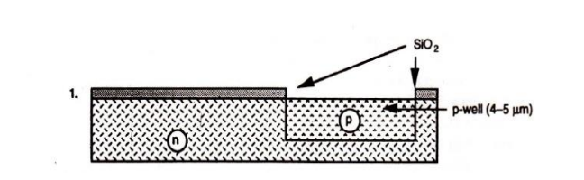
This diffusion should be carried out with special care since the p-well doping concentration and depth will affect the threshold voltages as well as the breakdown voltages of the n-transistors. To achieve low threshold voltages (0.6 to 1.0 V) either deep-well diffusion or high-well resistivity is required. However, deep wells require larger spacing between the n- and p-type transistors and wires due to lateral diffusion and therefore a larger chip area. The p-wells Act as substrates for the n-devices within the parent n-substrate, and, the two areas are electrically isolated.
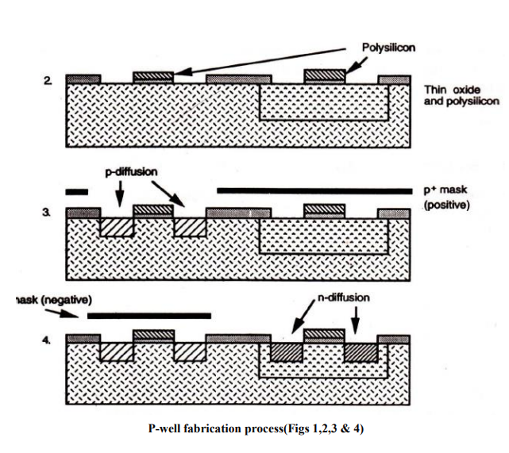
Except this in all other respects- like masking, patterning, and diffusion-the process is similar to NMOS fabrication.
The diagram below shows the CMOS p-well inverter showing \( V_{DD} \) and \( V_{ss} \) substrate connections
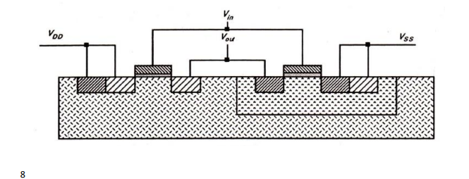
Though the p-well process is widely used in C-MOS fabrication the n-well fabrication is also very popular because of the lower substrate bias effects on transistor threshold voltage and also lower parasitic capacitances associated with source and drain regions.
The typical n-well fabrication steps are shown in the diagram below.
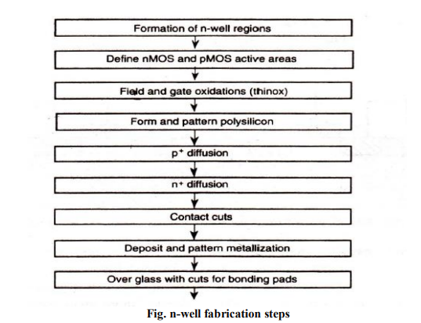
The first mask defines the n-well regions. This is followed by a low dose phosphorus implant driven in by a high temperature diffusion step to form the n-wells. The well depth is optimized to ensure against-substrate top+ diffusion breakdown without compromising then-well to n+ mask separation. The next steps are to define the devices and diffusion paths, grow field oxide, deposit and pattern the poly silicon, carry out the diffusions, make contact cuts, and finally metalize as before. Lt will be seen that an n+ mask and its complement may be used to define the n- and pdiffusion regions respectively. These same masks also include the \( V_{DD} \) and \( V_{ss} \) contacts (respectively). It should be noted that, alternatively, we could have used a p+ mask and its complement since the n + and p + masks are generally complementary.
The diagram below shows the Cross-sectional view of n-well CMOS Inverter
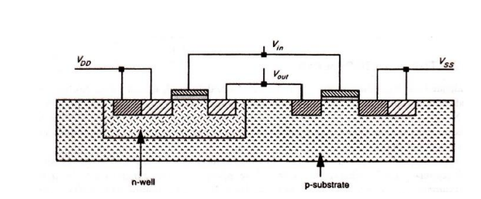
Due to the differences in charge carrier mobilities, the n-well process creates non-optimum pchannel characteristics. However, in many CMOS designs (such as domino-logic and dynamic logic structures), this is relatively unimportant since they contain a preponderance of n-channel devices. Thus then-channel transistors are mainly those used to form1ogic elements, providing speed and high density of elements.
However, a factor of the n-well process is that the performance of the already poorly performing p-transistor is even further degraded. Modern process lines have come to grips with these problems, and good device performance may be achieved for both p-well and n-well fabrication.
The driving capability of MOS transistors is less because of limited current sourcing and sinking capabilities of the transistors. To drive large capacitive loads Bi-CMOS technology is used. As this technology combines Bipolar and CMOS transistors in a single integrated circuit, it has the advantages of both bipolar and CMOS transistors. Bi-CMOS is able to achieve VLSI circuits with speed-power-density performance previously not possible with either technology individually. The diagram given below shows the cross section of the Bi-CMOS process which uses an NPN transistor
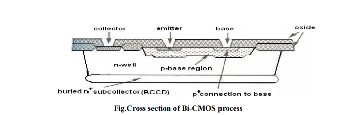
The lay-out view of Bic-MOS transistor is shown in the figure below. The fabrication of BiCMOS is similar to CMOS but with certain additional process steps and additional masks are considered. They are (i) the p+ base region; (ii) n+ collector area; and (iii) the buried sub collector (BCCD)
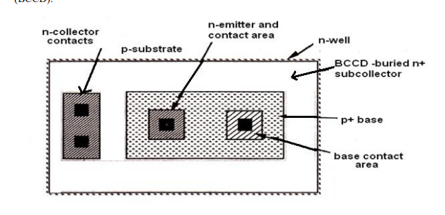
Let’s strip the textbook language down to semiconductor basics, then rebuild the logic. The key is understanding why a well is needed at all.
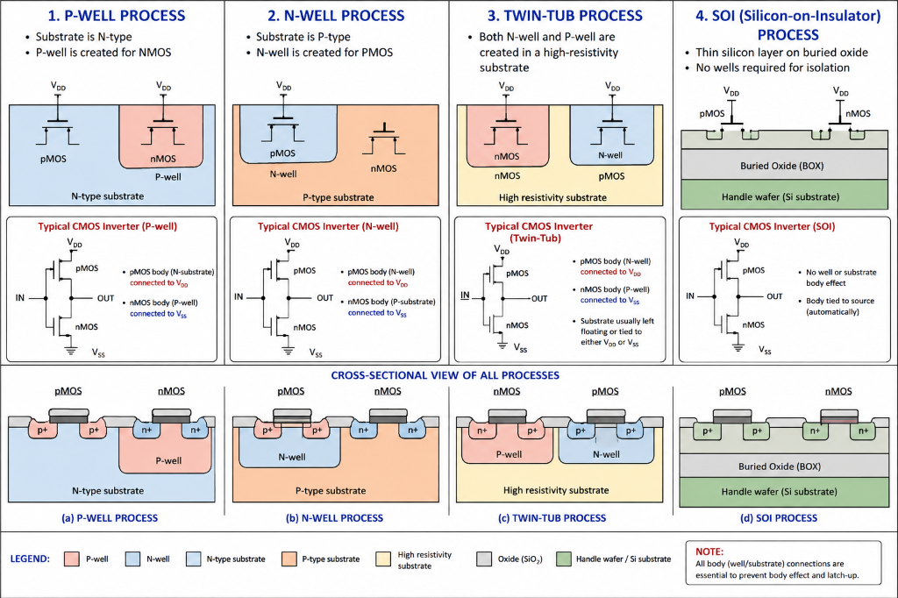
A CMOS inverter contains two MOSFETs:
Start with an n-type silicon substrate. It has lots of electrons as majority carriers. An NMOS needs a P-type body (holes as majority carriers). But our entire starting substrate is N-type.
Solution: Create a P-type region inside the N-type substrate. That region is called a P-well.
This is the most important picture to understand:
The electrical properties of the P-well directly affect how difficult it is to create the NMOS channel (Threshold Voltage, \(V_T\)). The two major properties are Doping concentration and Well depth.
When the textbook says high-well resistivity, it's talking about a relatively lightly doped P-well (fewer charge carriers = higher resistivity).
When dopants are introduced, they don't remain perfectly vertical. They spread sideways as well as downward (Lateral Diffusion).
If the P-well is made deeper, lateral diffusion becomes more significant. You need more spacing between structures to prevent unwanted interaction. More spacing = larger chip = higher fabrication cost.
The bodies must be connected to appropriate fixed potentials to prevent unwanted forward biasing. For the PMOS in N-type substrate, it connects to VDD. For the NMOS in P-well, it connects to VSS.
In the N-well process, we basically flip the arrangement. We start with a P-type substrate (for the NMOS), and we create an N-well to put the PMOS inside.
Your textbook gives two reasons: lower substrate bias effects on threshold voltage, and lower parasitic capacitances.
Step 1: Start with P-type substrate.
Step 2: Use a mask to define the N-well region.
Step 3: Implant Phosphorus (N-type dopant).
Step 4: High-temperature diffusion to drive the dopants to the desired depth.
The textbook says complementary masks can define opposite diffusion regions. It's just a layout convenience: the mask defining where n+ goes can be inverted to define where p+ goes.
Electrons move through silicon faster than holes (\( \mu_n \approx 2\text{–}3 \mu_p \)). Therefore, NMOS is naturally stronger/faster, and PMOS is naturally weaker/slower.
The N-well process historically worsened PMOS characteristics even further. However, it was still heavily used because in circuits like dynamic/domino logic, there is a large majority (preponderance) of NMOS devices, so optimizing NMOS performance was more important than saving the PMOS.
| Feature | P-well | N-well |
|---|---|---|
| Starting substrate | N-type | P-type |
| Special well | P-well | N-well |
| NMOS location | P-well | P-substrate |
| PMOS location | N-substrate | N-well |
| NMOS body contact | VSS | VSS |
| PMOS body contact | VDD | VDD |
The graph below shows the \( I_D \) Vs \( V_{DS} \) characteristics of an n- MOS transistor for several values of \( V_{GS} \) .It is clear that there are two conduction states when the device is ON. The saturated state and the non-saturated state. The saturated curve is the flat portion and defines the saturation region. For \( V_{gs} < V_{DS} + V_{th} \), the NMOS device is conducting and \( I_D \) is independent of \( V_{DS} \). For \( V_{gs} > V_{DS} + V_{th} \), the transistor is in the non-saturation region and the curve is a half parabola. When the transistor is OFF (\( V_{gs} < V_{th} \)), then \( I_D \) is zero for any \( V_{DS} \) value.
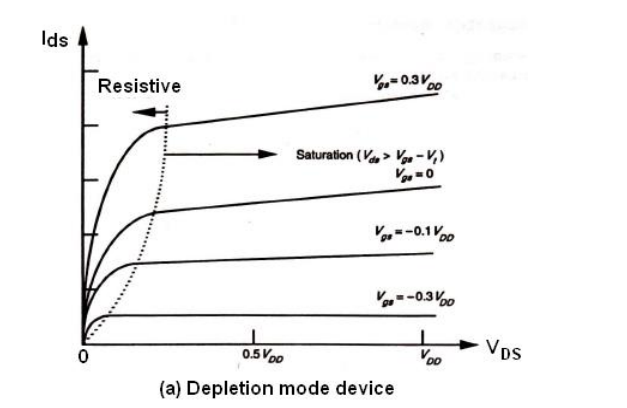
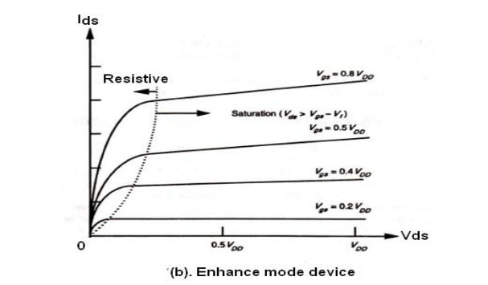
The boundary of the saturation/non-saturation bias states is a point seen for each curve in the graph as the intersection of the straight line of the saturated region with the quadratic curve of the nonsaturated region. This intersection point occurs at the channel pinch off voltage called \( V_{DSAT} \). The diamond symbol marks the pinch-off voltage \( V_{DSAT} \) for each value of \( V_{GS} \). \( V_{DSAT} \) is defined as the minimum drain-source voltage that is required to keep the transistor in saturation for a given \( V_{GS} \).In the non-saturated state, the drain current initially increases almost linearly from the origin before bending in a parabolic response. Thus the name ohmic or linear for the non- saturated region.
The drain current in saturation is virtually independent of \( V_{DS} \) and the transistor acts as a current Source. This is because there is no carrier inversion at the drain region of the channel. Carriers are pulled into the high electric field of the drain/substrate pn junction and ejected out of the drain terminal.
The working of a MOS transistor is based on the principle that the use of a voltage on the gate induce a charge in the channel between source and drain, which may then be caused to move from source to drain under the influence of an electric field created by voltage \( V_{ds} \) applied between drain and source. Since the charge induced is dependent on the gate to source voltage \( V_{gs} \) then \( I_{ds} \) is dependent on both \( V_{gs} \) and \( V_{ds} \).
Let us consider the diagram below in which electrons will flow source to drain .So, the drain current is given by
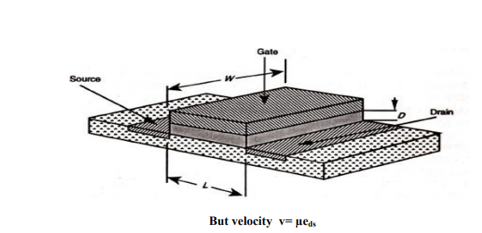
Where the transit time is given by
14
But velocity \( v= \mu e_{ds} \)
Where \( \mu = \) electron or hole mobility and \( E_{ds} = \) Electric field
Also , \( E_{ds} = V_{ds}/L \)
So, \( v = \mu . V_{ds}/L \)
And \( \tau_{ds} = L^2 / \mu . V_{ds} \)
The typical values of \( \mu \) at room temperature are given below
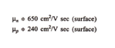
Let us consider the \( I_d \) vs \( V_d \) relationships in the non-saturated region .The charge induced in the channel due to due to the voltage difference between the gate and the channel, \( V_{gs} \) (assuming substrate connected to source). The voltage along the channel varies linearly with distance X from the source due to the IR drop in the channel .In the non-saturated state the average value is \( V_{ds}/2 \). Also the effective gate voltage \( V_g = V_{gs} – V_t \) where \( V_t \), is the threshold voltage needed to invert the charge under the gate and establish the channel.
Hence the induced charge is \( Q_c = E_g \varepsilon_{ins} \varepsilon_o W . L \)
15
Where
\( E_g = \) average electric field gate to channel
\( \varepsilon_{ins} \) – relative permittivity of insulation between gate and channel
\( \varepsilon_o \) = permittivity of free space.
So, we can write that
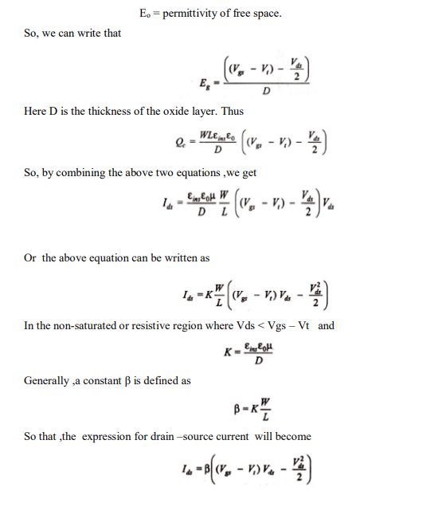
Here D is the thickness of the oxide layer. Thus
So, by combining the above two equations ,we get
Or the above equation can be written as
In the non-saturated or resistive region where Vds < Vgs – Vt and
Generally ,a constant \(\beta\) is defined as
So that ,the expression for drain –source current will become
The gate /channel capacitance is
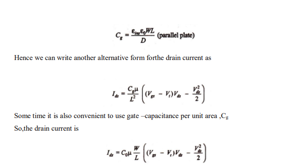
Hence we can write another alternative form forthe drain current as
Some time it is also convenient to use gate –capacitance per unit area ,\( C_g \)
So,the drain current is
Saturation begins when \( V_{ds} = V_{gs} - V_t \), since at this point the IR drop in the channel equals the effective gate to channel voltage at the drain and we may assume that the current remains fairly constant as \( V_{ds} \) increases further. Thus
Or we can also write that
Or it can also be written as
Or
The expressions derived above for \( I_{ds} \) hold for both enhancement and depletion mode devices. Here the threshold voltage for the NMOS depletion mode device (denoted as \( V_{td} \)) is negative.
16
BRO, the paragraph is mixing up the inequalities in the textbook. Let's rebuild the whole \(I_D\)-\(V_{DS}\) characteristic from absolute basics, then the graph becomes almost obvious.
For an NMOS, we control two voltages:
And we observe:
So the graph is:
for several fixed values of \(V_{GS}\).
Suppose:
Here, the gate voltage isn't high enough to create an inversion channel. So:
even if you increase \(V_{DS}\).
Visually:
The gate hasn't created the conducting path between source and drain.
No channel → no significant drain current.
Increase the gate voltage:
Now an inversion channel forms between source and drain.
Now current can flow. But here's the important part:
There are two major operating regions (with the transition called pinch-off):
Suppose \(V_{GS}\) is fixed above threshold. Start increasing \(V_{DS}\) from zero.
At first, \(I_D\) increases approximately linearly with \(V_{DS}\).
Because the MOSFET is behaving somewhat like a voltage-controlled resistor. The channel exists from source to drain, and increasing \(V_{DS}\) increases the electric field along the channel. So:
Remember: \(V_{GS} > V_{TH}\) creates the channel, but voltage inside the channel isn't the same everywhere.
The effective gate-to-channel voltage gets smaller as we move toward the drain. This is the key to understanding pinch-off.
The channel disappears at the drain end when the local gate-to-channel voltage reaches threshold:
Rearranging this gives us the boundary voltage:
Your paragraph says: "For \(V_{GS} < V_{DS} + V_{TH}\), the NMOS device is conducting and \(I_D\) is independent of \(V_{DS}\)."
That is not consistent with standard equations. The standard conditions are:
Pinch-off does NOT mean current suddenly becomes zero.
Before pinch-off:
At pinch-off:
Once pinch-off occurs, the electric field near the drain becomes very strong. Electrons traveling through the channel reach the pinch-off region and are swept toward the drain by this strong electric field.
Once \(V_{DS} \ge V_{DSAT}\), the channel is pinched off near the drain. Increasing \(V_{DS}\) further doesn't significantly increase the amount of channel charge controlled by the gate.
Therefore: \(V_{DS}\uparrow\) but approximately \(I_D \approx \text{constant}\). That's the saturation region.
In saturation, \(I_D \approx \text{constant}\) while \(V_{DS}\) changes. Therefore the MOSFET behaves approximately like a controlled current source, controlled by \(V_{GS}\).
Conceptually: \(\boxed{V_{GS} \rightarrow I_D}\), while in saturation \(\boxed{V_{DS}\text{ has relatively little effect on }I_D}\).
For an ideal long-channel NMOS:
Notice there is no \(V_{DS}\) in this equation. \(V_{DSAT} = V_{GS} - V_{TH}\) is the minimum \(V_{DS}\) needed to put the NMOS into saturation for a particular \(V_{GS}\).
Your text says: "This is because there is no carrier inversion at the drain region of the channel."
Don't interpret this as: "There are no electrons near the drain." More accurately: The inversion layer no longer extends continuously right up to the drain terminal. The channel terminates at a pinch-off region, and carriers are swept through this high-field region into the drain.
Memorize this, not the confusing paragraph:
And the golden equation:
This part is actually the physical foundation behind the \(I_D\)-\(V_{DS}\) equations we just discussed. The textbook throws several equations at you at once, so let's unpack the chain slowly.
An NMOS has:
When we apply:
the gate creates an inversion channel between source and drain. That channel contains mobile electrons.
Now apply:
This creates an electric field along the channel. That electric field makes the electrons move from source → drain.
So the basic story is:
Therefore:
The gate is insulated from the channel by oxide. So the gate doesn't directly inject current into the channel.
Instead, its electric field attracts electrons toward the surface and creates the inversion layer.
So:
where \(Q_C\) is the charge stored in the channel.
Imagine the channel as a road:
\(V_{DS}\) creates an electric field along this road. Electric field:
where:
So if \(V_{DS}\) increases:
and the electrons are driven harder along the channel.
The textbook says:
That is fundamentally just:
So:
where:
This is a very useful physical picture.
Transit time simply means: How long does an electron take to travel from source to drain?
If the channel is length \(L\), and electron velocity is \(v\):
That's just: \(\text{time} = \frac{\text{distance}}{\text{velocity}}\). Nothing mysterious.
For example, if \(L = 10\text{ units}\) and \(v = 2\text{ units/s}\), then \(\tau = 5s\).
Same idea inside the MOSFET, except the dimensions are tiny and velocities are enormous.
The textbook gives:
This is the drift velocity relation. Here:
Higher mobility: \(\mu\uparrow \Rightarrow v\uparrow\)
For electrons, we usually use \(\mu_n\). For holes, \(\mu_p\).
So for an NMOS:
We already have: \(E_{DS} = \frac{V_{DS}}{L}\)
Therefore: \(v = \mu \frac{V_{DS}}{L}\) or:
This is exactly what your textbook says.
We had: \(\tau_{DS} = \frac{L}{v}\) and \(v = \frac{\mu V_{DS}}{L}\)
Substitute:
Dividing by a fraction means multiplying by its reciprocal:
Therefore:
And that's the equation appearing in your notes.
Look at:
What happens when \(V_{DS}\) increases? The denominator increases.
Therefore:
Meaning: Higher \(V_{DS}\) makes the electrons cross the channel faster.
And since \(I = \frac{Q}{t}\), smaller transit time means larger current:
That's why \(I_D\) initially increases as \(V_{DS}\) increases.
This is the part I want you to actually understand:
That is the physical reason for the rising part of the \(I_D\)-\(V_{DS}\) curve.
Exactly! And this is where the linear/ohmic region comes from.
If channel charge \(Q_C\) were approximately constant:
then:
Therefore:
That gives the approximately straight portion of the curve.
But there is one giant catch: \(Q_C\) is NOT actually constant along the channel when \(V_{DS}\) becomes significant.
And that's why the curve eventually bends.
This connects directly to what we discussed previously. The gate creates the channel, but the channel voltage isn't the same everywhere.
Therefore, the effective gate-to-channel voltage near the drain becomes: \(V_{GS} - V_{DS}\)
As \(V_{DS}\) increases: \(V_{GS} - V_{DS}\downarrow\). So the channel becomes thinner toward the drain.
Therefore the available channel charge \(Q_C\) is no longer constant. That causes the \(I_D\)-\(V_{DS}\) curve to bend.
When: \(V_{DS} = V_{GS} - V_{TH}\), we reach:
The channel pinches off at the drain end. After that, we're in saturation.
So our simple "higher \(V_{DS}\) → faster electrons → higher current" story stops being sufficient because the channel itself is changing.
Your textbook writes:
This is just a sign convention.
For an NMOS, electron movement is: \(\boxed{\text{Source} \rightarrow \text{Drain}}\) because electrons are negatively charged.
But conventional current is defined opposite to electron movement: \(\boxed{\text{Drain} \rightarrow \text{Source}}\)
So don't let the negative sign scare you. It is mostly bookkeeping about current direction.
Your textbook is basically doing this:
Therefore: \(v = \mu \frac{V_{DS}}{L}\)
Then: \(\tau_{DS} = \frac{L}{\mu V_{DS}/L}\) giving: \(\boxed{\tau_{DS} = \frac{L^2}{\mu V_{DS}}}\)
And therefore, in the simplified constant-charge picture:
which explains why current initially increases with \(V_{DS}\).
Don't memorize these as disconnected equations. Think of the MOSFET as:
So there are two controls:
And together:
That's the physical intuition sitting underneath the MOSFET \(I_D\)-\(V_{DS}\) characteristics.
The gate structure of a MOS transistor consists, of charges stored in the dielectric layers and in the surface to surface interfaces as well as in the substrate itself. Switching an enhancement mode MOS transistor from the off to the on state consists in applying sufficient gate voltage to neutralize these charges and enable the underlying silicon to undergo an inversion due to the electric field from the gate. Switching a depletion mode NMOS transistor from the on to the off state consists in applying enough voltage to the gate to add to the stored charge and invert the 'n' implant region to 'p'.
The threshold voltage \(V_t\) may be expressed as:
For polynomial [polysilicon] gate and silicon substrate, the value of \(\Phi_{ms}\) is negative but negligible and the magnitude and sign of \(V_t\) are thus determined by balancing the other terms in the equation.
To evaluate the \(V_t\) the other terms are determined as below.
Generally while studying the MOS transistors it is treated as a three terminal device. But, the body of the transistor is also an implicit terminal which helps to understand the characteristics of the transistor. Considering the body of the MOS transistor as a terminal is known as the body effect.
18
The potential difference between the source and the body (\(V_{sb}\)) affects the threshold voltage of the transistor. In many situations, this Body Effect is relatively insignificant, so we can (unless otherwise stated) ignore the Body Effect. But it is not always insignificant, in some cases it can have a tremendous impact on MOSFET circuit performance.
Increasing \(V_{sb}\) causes the channel to be depleted of charge carriers and thus the threshold voltage is raised. Change in \(V_t\) is given by \(\delta V_t = \gamma \cdot (V_{sb})^{1/2}\) where \(\gamma\) is a constant which depends on substrate doping so that the more lightly doped the substrate, the smaller will be the body effect.
The threshold voltage can be written as:
Where \(V_t(0)\) is the threshold voltage for \(V_{sd} = 0\).
A collection of AI-generated study notes, deep-dive lectures, and visual maps.
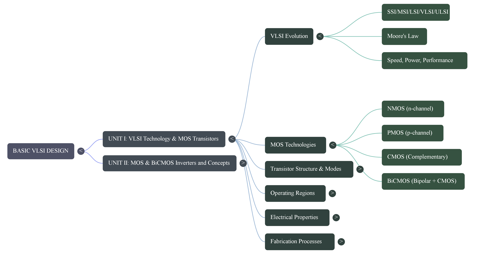
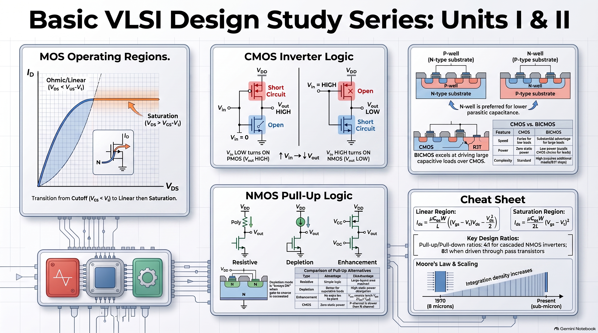